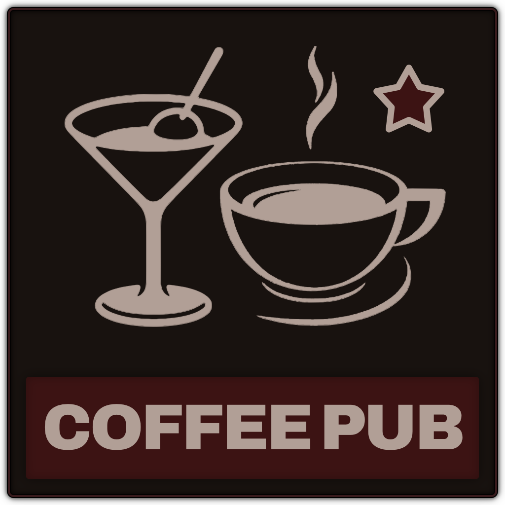

ACTIVE
OBS window name
-
Window bar
Shares only the content, not the title bar.
Page audio
-

The OBS publishing toolkit.
Keeps your OBS window-capture sources pointed at these windows after every launch, so you never re-pick a window. In OBS: Tools > WebSocket Server Settings, enable the server and set a password.
Not connected.
Coffee Pub Tavern is the voice and video server for the people at your table. Sign in with an admin account and the Tavern tab lists everyone; publish a player to give them their own OBS Browser Source.
The player's video, or their player image when the camera is off, with the talking border, overlay images and name plate set on the Tavern. Audio is always included; use the source's Control audio via OBS in OBS for the mixer.
A second source: the character image with the talking and muted images on top, set on the Tavern. With no character image it stays transparent until they talk or mute, so it can sit over a character bar.
Not signed in.
Sign in to the Tavern on the Session tab to see its users here.
Drag on the snapshot to draw the region, or type the numbers. Sizes are in window points.